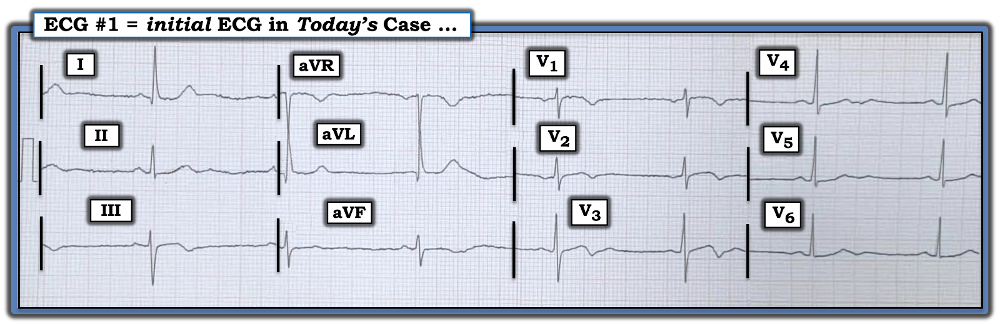
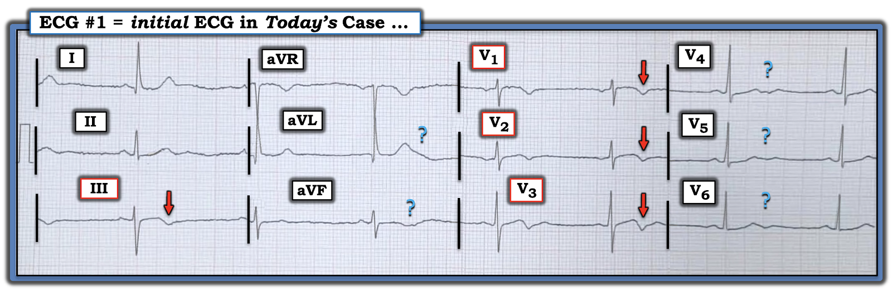
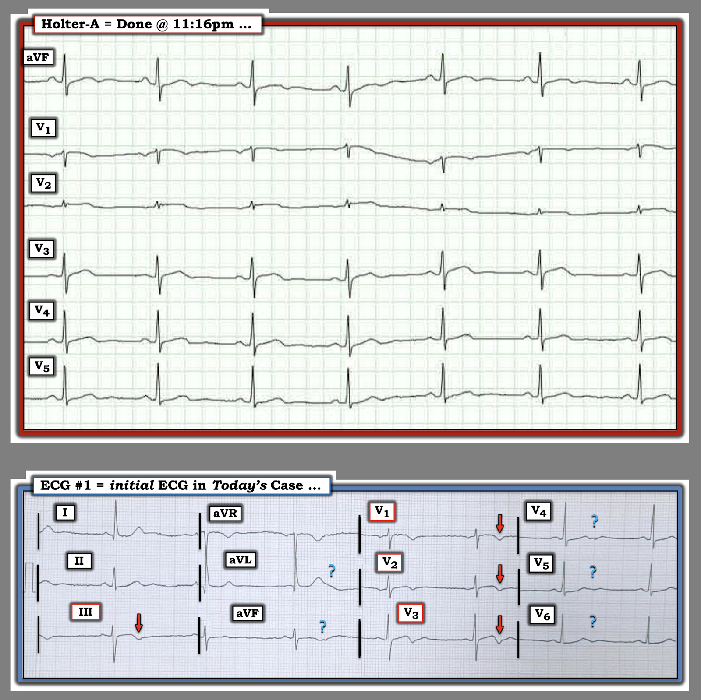
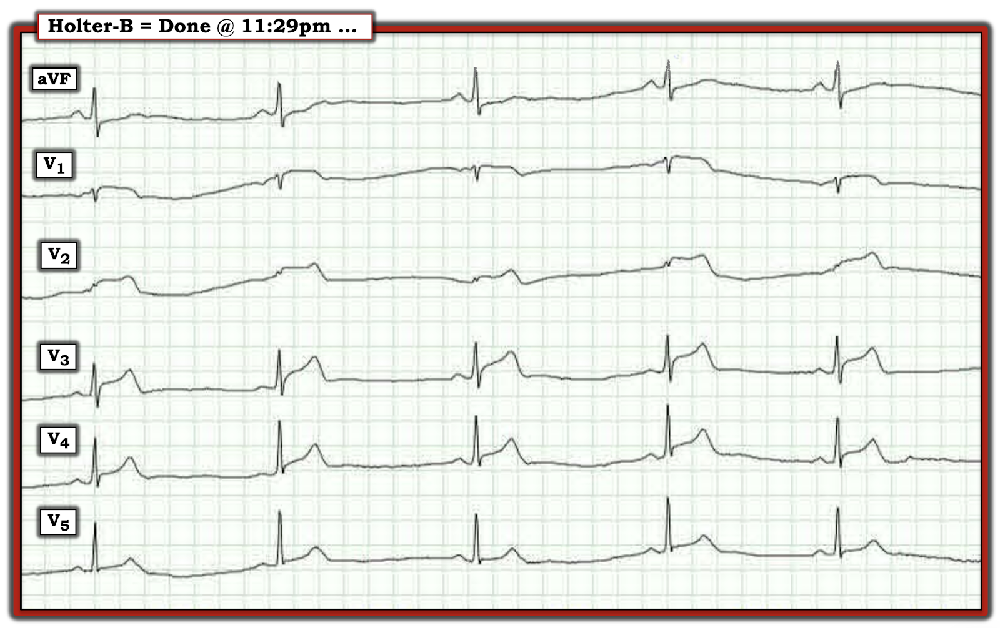
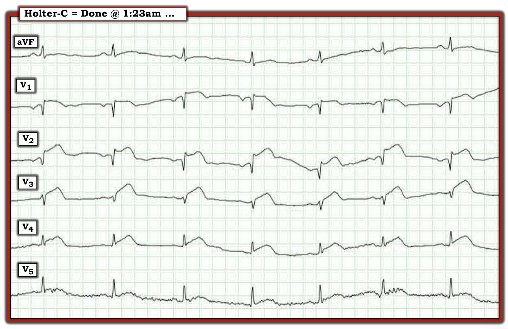
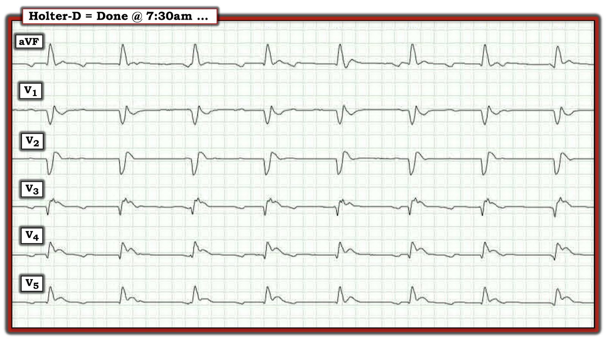
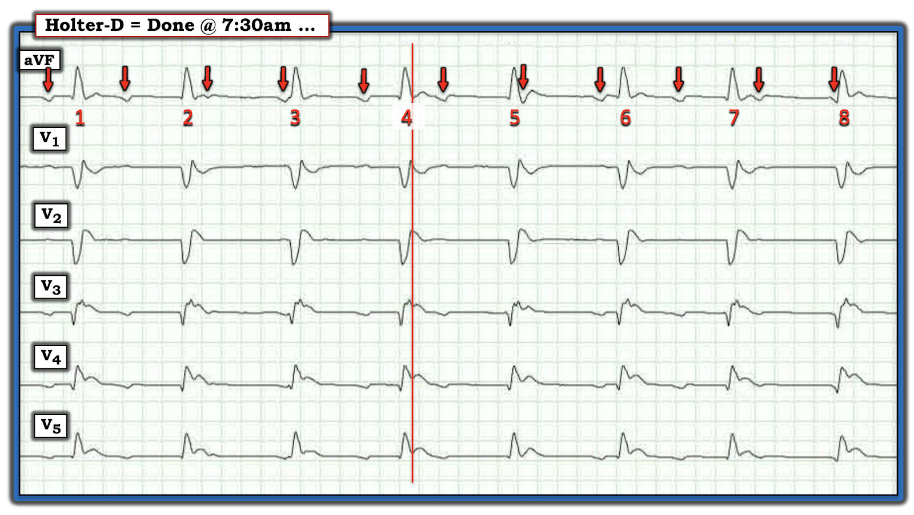
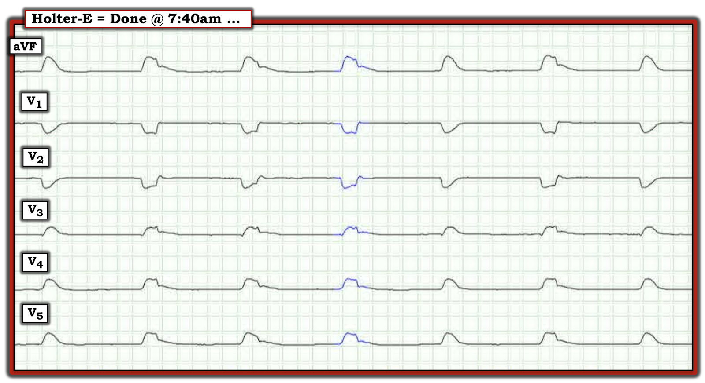
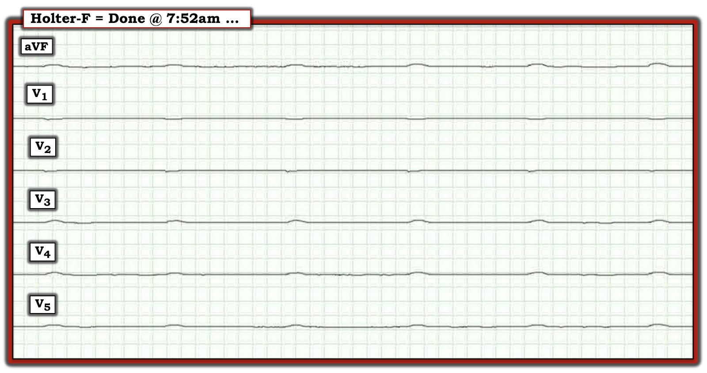

ECG Blog #543 — Đã gắn Holter 24 giờ ...
Điện tâm đồ ở Hình 1 được ghi từ một phụ nữ lớn tuổi trước đó khỏe mạnh — đến khám vì chóng mặt và mệt mỏi, nhưng không có CP (đau ngực – Chest Pain).
- Chi tiết về thời gian xuất hiện triệu chứng của bệnh nhân này so với thời điểm ghi điện tâm đồ ở Hình 1 không rõ ràng.
CÂU HỎI:
Với bệnh sử nêu trên trong đầu:
- BẠN đọc thế nào điện tâm đồ ban đầu của ca hôm nay?
- Về mặt lâm sàng — Bạn sẽ làm gì?


Suy nghĩ của tôi:
Điện tâm đồ ở Hình 1 cho thấy nhịp chậm xoang với tần số ~50/phút.
- QRS hẹp — khoảng PR bình thường — và QTc có lẽ không tăng khi xét đến tần số chậm.
- Có thể có sóng U nhỏ ở các chuyển đạo giữa ngực (điều này đôi khi xảy ra kèm theo nhịp chậm).
- Trục hơi lệch trái — tuy nhiên chưa đủ âm để đạt tiêu chuẩn LAHB (QRS ở chuyển đạo aVF âm nhiều hơn dương một chút — nhưng chủ yếu dương ở chuyển đạo aVL — nên trục vào khoảng -15 độ).
- Có thể có tiêu chuẩn điện thế của LVH (Khó nói chắc chắn sóng R ở aVL có ≥12 mm hay không — vì sóng R này ở aVL chồng lên sóng S ở chuyển đạo aVR).
Về Thay đổi sóng Q-R-S-T:
- Các sóng Q hẹp ở chuyển đạo I,aVL có lẽ không bất thường khi biên độ sóng R ở các chuyển đạo này khá cao.
- Tăng tiến sóng R — trông bình thường, với vùng chuyển tiếp (nơi sóng R trở nên cao hơn độ sâu của sóng S) xảy ra bình thường giữa chuyển đạo V2-V3.
- Có bất thường ST-sóng T kín đáo ở một số chuyển đạo. Như thấy ở chuyển đạo III và ở chuyển đạo V1,V2,V3 — có đoạn ST dạng vòm (coving) nhưng thực ra không chênh lên, theo sau là sóng T đảo ngược (các mũi tên ĐỎ ở những chuyển đạo này).
- Các dấu chấm hỏi XANH ở một số chuyển đạo khác đánh dấu những đoạn ST-T có ý nghĩa không chắc chắn — nhất là khi hình dạng ST-T khác nhau giữa chỉ 2 phức bộ mà chúng ta thấy được ở chuyển đạo aVL và aVF — và việc chúng ta không thể thấy trọn vẹn ST-T của phức bộ thứ 2 ở chuyển đạo V4,V5,V6 (? đâu là thật, đâu là nhiễu?). Dù vậy — ít nhất có vẻ có ST dẹt ở chuyển đạo II, với ST chênh xuống nhẹ ở chuyển đạo V4,V5,V6.
Nhận định: Với bệnh sử ngắn gọn mà chúng ta được cung cấp, nhưng không "có mặt tại chỗ" — thật khó biết nên nghĩ gì về những thay đổi điện tâm đồ mô tả ở trên, được trình bày ở Hình 2.
- Rõ ràng là có thể người phụ nữ lớn tuổi này vào một thời điểm nào đó (có thể là gần đây) — đã bị nhồi máu thành dưới và thành trước. Dù vậy — việc không có tiền sử đau ngực trước đó (và sự không chắc chắn về thời điểm xuất hiện "chóng mặt và mệt mỏi" của bệnh nhân lớn tuổi này ) — khiến khó biết liệu bà có thể đã bị nhồi máu cơ tim "thầm lặng" với triệu chứng "tương đương đau ngực" hay không? Và nếu có — thì điều đó có thể đã xảy ra khi nào? (Xem ECG Blog #228 — để biết thêm về nhồi máu cơ tim "thầm lặng").
- Khi không có tiền sử CP trước đó rồi tự hết — ca này không phù hợp tiêu chuẩn của "hội chứng Wellens". Dù vậy — điện tâm đồ #1 chắc chắn có thể là hậu quả của nhồi máu dưới-trước vào một thời điểm nào đó, có thể gần đây (Xem ECG Blog #320 và ECG Blog #350 — để biết thêm hội chứng Wellens là gì và không phải là gì).


==================================
Ca bệnh tiếp diễn:
Người phụ nữ lớn tuổi này cho đến nay chưa từng tìm đến chăm sóc y tế. Bà sống một mình và hoàn toàn tự lập. Mặc dù bà khai chóng mặt và mệt mỏi là lý do đến cấp cứu — người chăm sóc y tế điều trị cho bà thấy bà trông khỏe đến bất ngờ. Vì vậy — ACS (hội chứng vành cấp – Acute Coronary Syndrome) đã không được nghĩ tới:
- Đáng lưu ý, bệnh nhân không có bảo hiểm y tế và gặp hạn chế về tài chính. Vì vậy — bà không muốn làm nhiều xét nghiệm chẩn đoán, nhất là khi bà cảm thấy đủ khỏe để trở về cuộc sống tự lập ở nhà.
- Troponin không được chỉ định.
- Thay vào đó, bà được gắn Holter lưu động 24 giờ — và bệnh nhân về nhà. Lịch tái khám được hẹn vào ngày hôm sau.
==================================
Holter của bệnh nhân . . .
Trong khi bạn suy ngẫm về những hạn chế đầy thách thức trong xử trí ca này — dưới đây ở Hình 3 đến 9 là các dải nhịp không liên tiếp từ Holter lưu động 24 giờ của bệnh nhân, được xem xét vào ngày hôm sau.
- LƯU Ý: Mỗi dải nhịp Holter không liên tiếp trong 6 dải nhịp trình bày dưới đây đều có 6 chuyển đạo — gồm 1 chuyển đạo chi (chuyển đạo aVF) — và 5 chuyển đạo ngực (chuyển đạo V1 đến V5).
- Khi xem các dải nhịp 6 chuyển đạo này — Hãy nhớ rằng triệu chứng duy nhất mà người phụ nữ lớn tuổi này khai là có chút "chóng mặt" và "mệt nhẹ" — nhưng không đau ngực. Holter lưu động 24 giờ được bắt đầu vài giờ sau khi bà được thăm khám. Bà vẫn không đau ngực.
- Để tiện so sánh, ở Hình 3 — tôi đã đặt lại điện tâm đồ ban đầu của bệnh nhân đã trình bày ở trên trong Hình 2.


Suy nghĩ của tôi về Holter-A:
Lưu ý đến những khác biệt nhỏ không tránh khỏi về vị trí điện cực khi theo dõi Holter 6 chuyển đạo so với vị trí điện cực của điện tâm đồ 12 chuyển đạo của bệnh nhân — tôi không nhận thấy có thay đổi đáng kể nào giữa 2 bản ghi này ở Hình 3.
13 phút sau ...


Các bản ghi tiếp theo trong lúc ngủ ...










Bình luận của tác giả:
Ca hôm nay thật khó khăn. Người phụ nữ lớn tuổi sống một mình này — đã qua đời tại nhà trong lúc ngủ. Các bản ghi Holter này chỉ được lấy ra sau đó.
- Có lẽ — điện tâm đồ ban đầu ở Hình 2 đã phản ánh tắc LAD và nhồi máu gần đây dưới dạng nhồi máu cơ tim "thầm lặng" ở người phụ nữ lớn tuổi này, người đến khám với triệu chứng "tương đương CP" tối thiểu ( = có chút chóng mặt và mệt mỏi) — nhưng ngoài ra trông khỏe và muốn về nhà.
- Có lẽ, lý do điện tâm đồ ban đầu của bệnh nhân không cho thấy ST chênh lên cấp — là vì một thời gian sau khi tắc LAD, đã có tái tưới máu tự phát vùng nhồi máu, làm hết hiện tượng mà hẳn là ST chênh lên vài giờ trước đó. Các mũi tên ĐỎ ở chuyển đạo III; V1,V2,V3 — cũng như các dấu chấm hỏi Xanh trên điện tâm đồ ban đầu của bà (ở Hình 2) rõ ràng là sóng T tái tưới máu.
- Tôi đã "từng ở đó". Là bác sĩ điều trị chính (Attending) và giảng viên y học gia đình trong 30 năm — chúng tôi thỉnh thoảng gặp những bệnh nhân lớn tuổi đến khám một ngày hoặc hơn sau khi có triệu chứng, với điện tâm đồ tương tự như ở Hình 2. Mặc dù nhập viện một hoặc hai ngày để bảo đảm không còn quá trình nào đang tiếp diễn là lý tưởng trong những ca như vậy (và tùy chi tiết từng ca — lý tưởng là làm các bản ghi liên tiếp, Troponin và trong một số trường hợp là thông tim) — đó không phải lúc nào cũng là con đường mà những bệnh nhân lớn tuổi này chọn, khi họ quyết định (với sự đồng thuận sau khi được thông tin đầy đủ) rằng họ chỉ muốn về nhà.
Tôi cũng đã "từng ở đó" trong tình huống rợn người khi đang đọc bản ghi Holter của một bệnh nhân nằm viện, có vẻ đang ổn ở khoa có theo dõi từ xa (telemetry) — thì đột nhiên ngay trong lúc tôi đang đọc Holter — tôi thấy tần số tim chậm lại đột ngột trên các dải nhịp liên tiếp, cho thấy diễn tiến dần đến rung thất (VFib) và ngừng tim.
- Lúc đó — tôi chạy lên tầng trên đến phòng bệnh nhân, chỉ để thấy cả một đội ngũ nhân viên y tế đang giữa chừng một nỗ lực hồi sức mà rốt cuộc không thành công, trên chính bệnh nhân có bản ghi Holter mà tôi đang đọc dở ...
- Đây là những ca khó khăn. Chúng ta quay lại và tự hỏi lẽ ra có thể làm gì khác để tránh cái chết bất ngờ của bệnh nhân? Chúng ta không nhất thiết tìm ra câu trả lời — nhưng sự tự vấn, nhìn lại một cách day dứt là một phần thiết yếu trong nhu cầu rút ra ý nghĩa từ những sự việc bi thương này, điều mà chúng ta đau đớn mong sẽ học được.
- T.B. (P.S.): Tôi thấy y văn đáng buồn là thiếu các ví dụ về những bản ghi Holter tình cờ ghi được trong quá trình diễn tiến của một biến cố tim cấp. Dù trên thực tế không thể tránh mọi trường hợp tương tự trong tương lai — Chúng ta cần học hỏi từ những ca như vậy. (Xem Watanabe và cs. — Heart Rhythm 8:18-25, 2014 và Nikolic và cs. — Circulation 66(1):218-225, 1982).
"Điều cần nhớ" cuối cùng ...
- Hãy lưu ý nhiều biểu hiện kín đáo mà một điện tâm đồ có thể có sau nhồi máu gần đây. Hãy tìm sóng T tái tưới máu của tái tưới máu tự phát. Tùy thuộc vào thời điểm ghi điện tâm đồ trong quá trình diễn tiến — có thể có "giả bình thường hóa" — trong đó một điện tâm đồ ghi được ở giữa giai đoạn ST chênh lên đang hết dần trên đường hình thành sóng T tái tưới máu — điện tâm đồ có thể trông tương đối "bình thường" (Xem ECG Blog #467).
- Triệu chứng của bệnh nhân có thể kín đáo (như trong Audio Pearl về "Silent MI" ở ECG Blog #228). Đặc biệt cần nhạy bén với những triệu chứng kín đáo có thể phản ánh nhồi máu gần đây ở bệnh nhân lớn tuổi.
- Hãy đối chiếu thời điểm xuất hiện và mức độ nặng tương đối của triệu chứng với thời điểm ghi từng điện tâm đồ. Biết được rằng triệu chứng có thể đã giảm vài giờ sau đó (vào thời điểm ghi điện tâm đồ mà bạn đang xem) — gợi ý cho chúng ta cần nhận ra những dấu hiệu kín đáo trên điện tâm đồ đó mà có thể quan trọng.
- Hãy nhận ra rằng dù chúng ta có cẩn trọng đến đâu — những biến cố bất ngờ như trong ca hôm nay đôi khi vẫn xảy ra ...
==================================
Lời cảm ơn: Xin cảm ơn Passang Jinpa (từ Guayaquil, Ecuador) — đã cho phép tôi sử dụng ca bệnh và bản ghi này.
==================================

…hữu ích ...